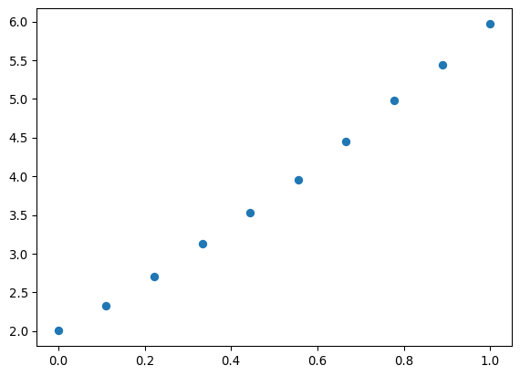
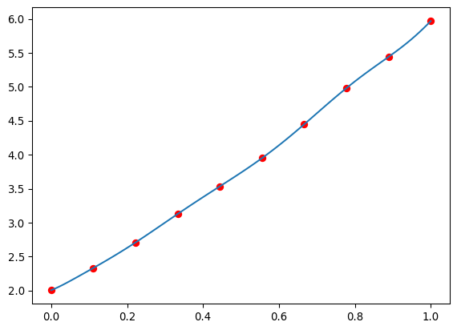
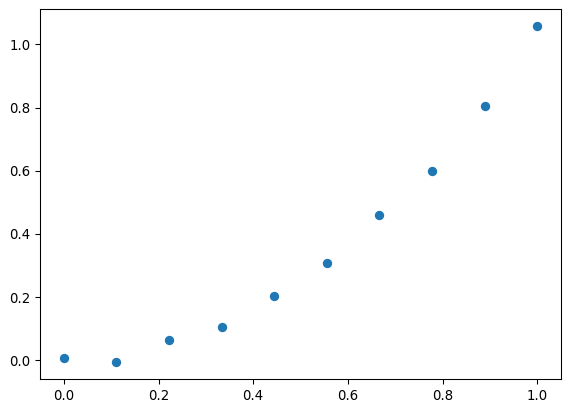
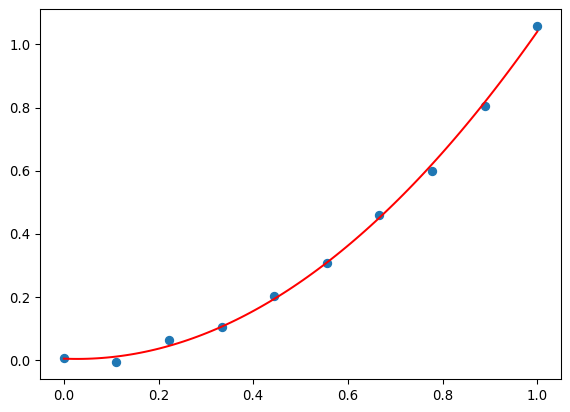

import numpy as np
import matplotlib.pyplot as pltAjuste de funciones
Vimos los métodos de interpolación para los cuales se exige que un polinomio pase por una serie de puntos \((x_o, y_o), ..., (x_n, y_n)\). Pero hay situaciones en las que esto no es práctico.
Cuando los datos vienen de una medición, las mediciones vienen con un error, y hacer una interpolación de alto orden puede conllevar a oscilaciones. Además, usar demasiados parámetros libres para ajustar datos experimentales es errado desde un punto de vista estadístico.
x = np.linspace(0, 1, 10)
func = x**2 + 3*x + 2
n = np.random.normal(0, 0.02, 10)
med = func + nplt.scatter(x, med)
def difer(puntos):
n = len(puntos) - 1
Fs = [np.zeros(n + 1)]
for i in range(n + 1):
Fs[0][i] = puntos[i][1]
for i in range(1, n + 1):
Fs.append(np.zeros(n + 1 - i))
for j in range(1, i + 1):
Fs[j][i-j] = (Fs[j-1][i-j+1] - Fs[j-1][i-j])/(puntos[i][0] - puntos[i-j][0])
return [Fs[i][0] for i in range(n + 1)]
def poly(x, coefs, puntos):
return sum(coefs[n]*np.prod([(x - puntos[i,0]) for i in range(n)]) for n in range(len(coefs)))puntos = np.array(list(zip(x, med)))
coefs = difer(puntos)x = np.linspace(0, 1, 100)
plt.plot(x, [poly(xi, coefs, puntos) for xi in x])
plt.scatter(puntos[:,0], puntos[:,1], color='red')
coefs[1.9866011874395495,
3.2578189637755415,
-0.21159828476133424,
6.660946676147336,
-26.793501018897295,
98.2339236960979,
-329.81346781222413,
896.024110709331,
-1815.7321858247478,
2524.0208935329842]Como vemos, el polinomio de alto orden no es un buen ajuste a estos datos. Y de hecho vemos que tiene coeficientes relativamente grandes hasta de orden 10, cuando sabemos que los datos son una parábola. Podríamos interpolar entre cada par de puntos usando una spline, pero entonces no podemos recuperar el modelo a partir de los datos.
Adicionalmente, tenemos 10 coeficientes para 10 puntos de datos. Siempre es posible ajustar un número de coeficientes igual al número de datos pero esto tiende a inducir las oscilaciones que vemos arriba, a esto se lo llama “overfitting” o sobreajuste.
Surge entonces una pregunta: ¿Cuál es el mejor polinomio de orden más bajo que se ajusta a los datos? Es decir, queremos que ese polinomio se “acerque lo más posible a los datos”. Adicionalmente, ¿qué criterio debemos usar para decidir si es un buen ajuste?
Ajuste de mínimos cuadrados
La respuesta a ambas preguntas tiene que ver con el ajuste de mínimos cuadrados.
Supongamos que tenemos un modelo, que depende de varios parámetros libres (que queremos medir) \(f(\vec{\theta}; x)\) donde \(\vec{\theta} = (\theta_1,...,\theta_n)\) son los parámetros libres.
Nuestros datos consisten de varios puntos \((x_o, \hat{y}_o), ..., (x_m, \hat{y}_m)\) tal que \(f(\vec{\theta}; x) = y\). Sin embargo los datos \(\hat{y}\) contienen un error de medición \(\hat{y}_i = y_i + \epsilon_i\), y tenemos que tomarlo en cuenta a la hora de encontrar los parámetros \(\theta\).
Si el error es gaussiano, la probabilidad de obtener un cierto valor \(\hat{y}_i\) es proporcional a
\[ P(\hat{y}_i) \propto \exp\left({-(\hat{y}_i - y_i)^2/\sigma_i}\right) \]
Si todos los datos son independientes, la probabilidad de obtener el conjunto de datos total será entonces la multiplicación de probabilidades, proporcional a
\[ P(\hat{y}) \propto \exp\left(-\sum_i(\hat{y}_i - y_i)^2/\sigma_i\right) \]
pero en realidad esta probabilidad no la conocemos a-priori porque no conocemos los verdaderos valores \(y_i\). Uno podría usar el modelo y escribir
\[ P(\hat{y} | \vec{\theta}) \propto \exp\left\{-\sum_i\left[\hat{y}_i - f(\vec{\theta};x_i)\right]^2/\sigma_i\right\} \]
A esta se la llama función de verosimilitud (likelihood).
En realidad lo que queremos es lo contrario: La probabilidad de que el verdadero valor de los parámetros sea \(\tilde{\theta}\) dadas las mediciones (las mediciones las tenemos, los parámetros los queremos obtener). Esto se puede lograr usando el teorema de Bayes
\[ P(\vec{\theta}|\hat{y}) = \frac{P(\hat{y} | \vec{\theta}) P(\vec{\theta})}{P(\hat{y})} \]
Si asumimos que \(P(\vec{\theta})\) es una función constante (a-priori cualquier valor es igualmente probable), entonces el conjunto de parámetros que maximiza \(P(\hat{y}|\vec{\theta})\) es el que maximiza \(P(\vec{\theta}|\hat{y})\). Entonces esto se reduce a minimizar la función
\[ \chi^2 \equiv \sum_i\frac{\left[\hat{y}_i - f(\vec{\theta};x_i)\right]^2}{\sigma_i} \]
Si todos los errores son iguales \(\sigma_i = \sigma\) entonces esto se reduce a minimizar la suma de los cuadrados
\[ E(\vec{\theta}) = \sum_i\left[\hat{y}_i - f(\vec{\theta};x_i)\right]^2 \]
Esta se llama una función de costo que queremos minimizar. Para diferentes tipos de problemas tenemos diferentes funciones de costo. Pero en este caso vamos a usar la de minimos cuadrados.
Ajuste lineal
Podemos por ejemplo hacer un ajuste de una recta \(f(a_o, a_1; x) = a_o + a_1 x\) y entonces
\[ E(a_o, a_1) = \sum_i\left[\hat{y}_i - (a_o + a_1 x_i)\right]^2\,. \]
Esta la podemos escribir en forma matricial como
\[ E(\vec{a}) = (\vec{y} - X\vec{a})^T(\vec{y} - X\vec{a})\,, \]
donde \(X\) es la matriz de características o de Van der Monde y está dada por
\[ X = \begin{bmatrix} 1 & x_1\\ 1 & x_2\\ \vdots & \vdots\\ 1 & x_m \end{bmatrix}\,, \]
el vector \(\vec{y}\) es \(\vec{y}^T = (y_1, y_2, \ldots, y_m)\) y el vector \(\vec{a}\) es \(\vec{a}^T = (a_o, a_1)\).
Escrito de esta manera, podemos encontrar el mínimo tomando la derivada respecto a los parámetros
\[ \frac{\partial E(\vec{a})}{\partial \vec{a}} = -2 X^T(\vec{y} - X\vec{a})\,, \]
Igualando a cero obtenemos las ecuaciones normales:
\[ X^TX \vec{a} = X^T\vec{y}\,. \]
Este es un sistema de ecuaciones como los que hemos estudiado antes. De hecho, la matriz \(X^TX\) es una matriz cuadrada \(2\times 2\) y el vector \(X^T\vec{y}\) es de dimensión \(2\). El algoritmo para resolver este tipo de sistemas se llama factorización QR (más información). Superficialmente se parece al algoritmo LU que vimos, pero está optimizado para este tipo de sistemas.
Lo útil de escribir el problema de esta forma es que podemos usarlo para ajustar cualquier polinomio. Por ejemplo, supongamos que queremos ajustar los datos a una parábola \(f(x) = a_2 x^2 + a_1 x + a_0\). Entonces el vector \(\vec{a}^T = (a_0, a_1, a_2)\) y la matriz de Van der Monde es
\[ X = \begin{bmatrix} 1 & x_1 & x_1^2\\ 1 & x_2 & x_2^2\\ \vdots & \vdots & \vdots\\ 1 & x_m & x_m^2 \end{bmatrix}\,. \]
Todo lo demás es igual que antes. Hagamos un ejemplo:
import numpy as np
import matplotlib.pyplot as plt
x = np.linspace(0, 1, 10)
func = x**2
n = np.random.normal(0, 0.02, 10)
med = func + n
plt.scatter(x, med)
vander = np.column_stack((np.ones(10), x, x**2))
# lstsq(a, b) resuelve el sistema ax = b aproximadamente usando lo descrito arriba.
# lstsq quiere decir least squares que en espanol significa "mínimos cuadrados".
aopt, *_ = np.linalg.lstsq(vander, med, rcond=None)
x_plot = np.linspace(0, 1, 100)
y_plot = aopt[0] + aopt[1]*x_plot + aopt[2]*x_plot**2
plt.scatter(x, med)
plt.plot(x_plot, y_plot, 'r')
plt.show()
Este mismo método se puede usar para cualquier combinación lineal de funciones de \(x\) de la forma \(f(x) = a_1 f_1(x) + a_2 f_2(x) + \ldots\). En el ejemplo anterior, \(f_1(x) = x\), \(f_2(x) = x^2\) y \(f_3(x) = 1\). Si quisiéramos ajustar el modelo \(f(x) = a_0 + a_1 e^x\) nuestra matriz de Van der Monde sería
\[ \begin{bmatrix} 1 & e^{x_1}\\ 1 & e^{x_2}\\ \vdots & \vdots\\ 1 & e^{x_m} \end{bmatrix}\,. \]
Este tipo de ajuste se llama ajuste lineal porque es una combinación lineal de funciones, aunque estas no tienen que ser rectas. Muchos problemas que no parecen lineales se pueden convertir en algo lineal, por ejemplo el modelo \(f(x) = cx^p\) donde queremos encontrar los mejores \(c\) y \(p\) se reduce a un ajuste lineal tomando el logaritmo \(\ln f(x) = \ln c + p \ln x\). Entonces basta tomar el logaritmo de los \(\vec{y}\) y ajustar con este modelo.
Scipy
Copiado de: https://docs.scipy.org/doc/scipy/reference/generated/scipy.optimize.curve_fit.html
Scipy tiene una función muy útil para realizar ajustes de curvas a datos, esta nos permite ajustar una función arbitraria con parámetros libres, incluyendo el caso en el que los puntos de datos tienen errores diferentes.
import matplotlib.pyplot as plt
from scipy.optimize import curve_fit
def func(x, a, b, c):
return a * np.exp(-b * x) + cxdata = np.linspace(0, 4, 50)
y = func(xdata, 2.5, 1.3, 0.5)
np.random.seed(1729)
y_noise = 0.2 * np.random.normal(size=xdata.size)
ydata = y + y_noise
plt.plot(xdata, ydata, 'b-', label='data')popt, pcov = curve_fit(func, xdata, ydata)
poptarray([2.55423706, 1.35190947, 0.47450618])plt.plot(xdata, func(xdata, *popt), 'r-',
label='fit: a=%5.3f, b=%5.3f, c=%5.3f' % tuple(popt))Se restringe el rango a \(0 < a < 3\), \(0 < b < 1\), \(0 < c < 1/2\)
popt2, pcov2 = curve_fit(func, xdata, ydata, bounds=(0, [3., 1., 0.5]))
popt2array([2.43708906, 1. , 0.35015434])plt.plot(xdata, ydata, 'b-', label='data')
plt.plot(xdata, func(xdata, *popt), 'r-',
label='fit: a=%5.3f, b=%5.3f, c=%5.3f' % tuple(popt))
plt.plot(xdata, func(xdata, *popt2), 'g--',
label='fit: a=%5.3f, b=%5.3f, c=%5.3f' % tuple(popt2))
plt.legend()Bondad de ajuste
En la clase pasada vimos que para errores gaussianos y mediciones independientes, la minimización de \(\chi^2\) nos permite encontrar el conjunto de parámetros más probable. Ahora estudiaremos cuándo podemos concluir que un ajuste es “bueno” o “malo”.
Recordemos la definición de \(\chi^2\)
\[ \chi^2 \equiv \sum_i \frac{(\hat{y}_i - f(x_i))^2}{\sigma^2} \]
Si todos los errores son gaussianos, la probabilidad de obtener un cierto valor de \(\chi^2\) es proporcional a \(e^{-\chi^2/2}\) y además hay que integrar sobre todos los puntos que tienen un mismo valor de \(\chi\) que forman una esfera, lo que nos da algo proporcional a \(\chi^{N - 1}e^{-\chi^2/2}\), donde \(N\) es el número de datos. Pero además necesitamos la probabilidad de \(\chi^2\) tal que
\[ P(\chi^2) \propto P(\chi) \frac{d\chi}{d\chi^2} = \chi^{N-2}e^{-\chi^2/2} \]
Sin embargo al ajustar \(m\) parámetros imponemos \(m\) condiciones sobre la región considerada, una por cada derivada parcial que fijamos a cero, tal que \(N\) debe ser en realidad el número de grados de libertad dado por el número de datos menos el número de parámetros.
def chi2(x, n):
from scipy.special import gamma
return 2**(-n/2)*x**((n-2)/2)*np.exp(-x/2)/gamma(n/2)x = np.linspace(0, 23, 100)
for n in [2, 3, 5, 10]:
plt.plot(x, chi2(x, n), label = '$n = $ %d'%(n))
plt.xlabel('$\chi^2$')
plt.ylabel('$P(\chi^2)$')
plt.legend()<>:4: SyntaxWarning: invalid escape sequence '\c'
<>:5: SyntaxWarning: invalid escape sequence '\c'
<>:4: SyntaxWarning: invalid escape sequence '\c'
<>:5: SyntaxWarning: invalid escape sequence '\c'
/tmp/ipykernel_781737/2246084070.py:4: SyntaxWarning: invalid escape sequence '\c'
plt.xlabel('$\chi^2$')
/tmp/ipykernel_781737/2246084070.py:5: SyntaxWarning: invalid escape sequence '\c'
plt.ylabel('$P(\chi^2)$')Entonces si al final de nuestro ajuste obtenemos un \(\chi^2\) tan grande que es poco probable, podemos concluir que el ajuste es malo en el sentido que las desviaciones respecto al modelo son grandes y no meramente debidas a fluctuaciones estadísticas.
Vemos que los valores más probables de \(\chi^2\) crecen a medida que crecen los parámetros libres. Por eso es usual usar el \(\chi^2\) dividido por el número de grados de libertad.
def chi2pdof(x, n):
from scipy.special import gamma
return n*2**(-n/2)*(n*x)**((n-2)/2)*np.exp(-x*n/2)/gamma(n/2)x = np.linspace(0, 5, 100)
for n in [2, 3, 5, 10, 20]:
plt.plot(x, chi2pdof(x, n), label = '$n = $ %d'%(n))
plt.xlabel('$\chi^2$')
plt.ylabel('$P(\chi^2)$')
plt.legend()<>:4: SyntaxWarning: invalid escape sequence '\c'
<>:5: SyntaxWarning: invalid escape sequence '\c'
<>:4: SyntaxWarning: invalid escape sequence '\c'
<>:5: SyntaxWarning: invalid escape sequence '\c'
/tmp/ipykernel_781737/433002063.py:4: SyntaxWarning: invalid escape sequence '\c'
plt.xlabel('$\chi^2$')
/tmp/ipykernel_781737/433002063.py:5: SyntaxWarning: invalid escape sequence '\c'
plt.ylabel('$P(\chi^2)$')Para ser un poco más cuantitativos, podemos calcular el valor de \(\chi^2\) tal que la probabilidad de tener un valor mayor sea menor a \(0.001\). Es decir, valores mayores que ese \(\chi^2\) son un “mal ajuste” en el sentido que es poco probable que sean debidos a una fluctuación estadística (probabilidad \(< 0.1\%\))
def chi2cum(x, n):
from scipy.special import gammainc
return gammainc(n/2, x/2)x = np.linspace(0, 5, 100)
for n in [2, 3, 5, 10]:
plt.plot(x, 1-chi2cum(x*n, n), label = '$n = $ %d'%(n))
plt.xlabel('$\chi^2$')
plt.ylabel('$P(\chi^2)$')
plt.legend()<>:4: SyntaxWarning: invalid escape sequence '\c'
<>:5: SyntaxWarning: invalid escape sequence '\c'
<>:4: SyntaxWarning: invalid escape sequence '\c'
<>:5: SyntaxWarning: invalid escape sequence '\c'
/tmp/ipykernel_781737/2906193940.py:4: SyntaxWarning: invalid escape sequence '\c'
plt.xlabel('$\chi^2$')
/tmp/ipykernel_781737/2906193940.py:5: SyntaxWarning: invalid escape sequence '\c'
plt.ylabel('$P(\chi^2)$')
m = 100
c = 0.01
crits = np.zeros(m - 2)
ns = np.arange(2,m)
for i in range(2, m):
def f(x):
n = i
from scipy.special import gammainc
return 1 - gammainc(n/2, n*x/2) - c
from scipy.optimize import root_scalar
r = root_scalar(f, bracket=[0,10])
crits[i-2] = r.rootplt.plot(ns, crits)c = 0.01
m = 100
crits = np.zeros(m - 2)
ns = np.arange(2,m)
for i in range(2, m):
def f(x):
n = i
from scipy.special import gammainc
return gammainc(n/2, n*x/2) - c
from scipy.optimize import root_scalar
r = root_scalar(f, bracket=[0,5])
crits[i-2] = r.rootplt.plot(ns, crits)Otra pregunta interesante es escoger cuál es el mejor modelo para describir un conjunto de datos (y no sólo el mejor valor de los parámetros). Esta pregunta es sutil y no tenemos tiempo para tratarla aquí, se deja a la curiosidad del estudiante.
Tareas
Tarea 10.6
Demiestre (analíticamente) las siguientes propiedades de la matriz \(X^TX\) que aparece en el ajuste de mínimos cuadrados:
Es una matriz simétrica para cualquier matriz \(X\) real \(n\times m\).
Es una matriz positiva definida para cualquier matriz \(X\) real \(n\times m\).
Tarea 10.7
Use scipy para resolver el siguiente problema:
Queremos medir los parámetros \(a\), \(b\) y \(k\) del siguiente modelo \(f(x) = a e^{kx} + b\) a partir de las siguientes mediciones
| \(x\) | \(f(x)\) | \(\sigma\) |
|---|---|---|
| \(1\) | \(6.54\) | \(0.1\) |
| \(2\) | \(7.57\) | \(0.3\) |
| \(3\) | \(8.83\) | \(0.1\) |
| \(4\) | \(10.43\) | \(0.2\) |
| \(5\) | \(12.95\) | \(0.05\) |
Encuentre los valores de los parámetros que mejor se ajustan a los datos. ¿Es un buen ajuste?
Tarea 10.8
En clase vimos cómo ajustar una línea recta a un conjunto de datos cuando el error de todos los datos es el mismo. Repita el ejercicio para los siguientes datos (que tienen todos un error diferente):
| \(x\) | \(f(x)\) | \(\sigma\) |
|---|---|---|
| \(0.1\) | \(5.71\) | \(0.2\) |
| \(0.2\) | \(7.21\) | \(0.3\) |
| \(0.3\) | \(8.07\) | \(0.2\) |
| \(0.4\) | \(9.73\) | \(0.4\) |
| \(0.5\) | \(10.06\) | \(0.05\) |
Es decir, reescriba el sistema de ecuaciones a resolver tomando en cuenta que cada error es diferente. Luego resuélvalo.
¿Es un buen ajuste?
Tarea 10.9
Ejercicio 3.1.9 de “Fundamentals of Numerical Computation” de Tobin A. Driscoll y Richard J. Braun, 2023.
Sin escribir código, muestre cómo se podrían ajustar a los datos las constantes \(a\) y \(b\) de la siguiente ecuación \(y(t) = t/(at + b)\) convirtiéndolo antes en un problema de ajuste lineal.
Tarea 10.10
Considere los siguientes datos:
| \(x\) | \(f(x)\) | \(\sigma\) |
|---|---|---|
| \(0.1\) | \(0.280\) | \(0.1\) |
| \(0.2\) | \(0.472\) | \(0.07\) |
| \(0.3\) | \(0.686\) | \(0.05\) |
| \(0.4\) | \(0.850\) | \(0.1\) |
| \(0.5\) | \(1.263\) | \(0.03\) |
| \(0.6\) | \(1.576\) | \(0.01\) |
| \(0.7\) | \(1.894\) | \(0.01\) |
Use scipy para ajustar los siguientes modelos:
- \(a_1 x\)
- \(a_1 x + a_2 x^2\)
- \(a_o + a_1 x + a_2 x^2\)
¿Cuál modelo describe mejor los datos? ¿Por qué?
Ahora repita lo mismo con los siguientes datos:
| \(x\) | \(f(x)\) | \(\sigma\) |
|---|---|---|
| \(0.1\) | \(-1.36\) | \(2.0\) |
| \(0.2\) | \(0.20\) | \(1.4\) |
| \(0.3\) | \(3.01\) | \(1.0\) |
| \(0.4\) | \(0.30\) | \(2.0\) |
| \(0.5\) | \(1.11\) | \(0.6\) |
| \(0.6\) | \(1.52\) | \(0.2\) |
| \(0.7\) | \(2.09\) | \(0.2\) |
Ambos datos fueron generados a partir de la misma función \(f\). Explique por qué cambian los resultados.